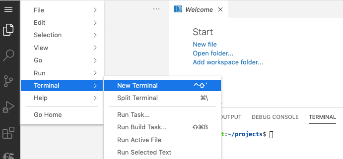

Getting Started¶
Please follow the instructions provided by the instructor to start your lab and access your jump host.
Note
All work for this lab will be performed exclusively from the Windows jumphost. No installation or interaction with your local system is required.
Lab Topology¶
The following components have been included in your lab environment:
1 BIG-IP virtual appliances (16.0.x)
1 Ubuntu client server running:
vscode
firefox
1 Ubuntu application server running:
OWASP Juice Shop (App port 80 & 81)
Hackazon (App port 8080 & 8081)
NGINX Demo App (App port 82 & 83)
Network Addressing¶
The following table lists VLANS, IP Addresses and Credentials for all components:
Component |
Management |
Internal |
External |
Additional IP |
|---|---|---|---|---|
Client Server |
10.1.1.2 |
10.1.10.2 |
10.1.20.2 |
none |
App Server |
10.1.1.3 |
10.1.10.3 |
10.1.20.3 |
none |
BIG-IP1 |
10.1.1.245 |
10.1.10.245 |
10.1.20.245 |
none |
Access Demo Environment¶
Click the Go to my VM List then find show details of ubuntu server to capture external address

Browse to External Address:8080 to access VS Code remote session
Open New Terminal in VS Code to run commands in this lab
Browse to External Address:5800 to access Firefox remote browser
From Firefox login to BIG-IP management interface (https://10.1.1.245). From VM List->BIG-IP click on show details then password to reveal password.
Note
You may copy password to clipboard however Ctrl+c and Ctrl+v does not work with the firefox web instance. You must paste into firefox cliboard and submit, then rtclk paste to paste as shown in the images below